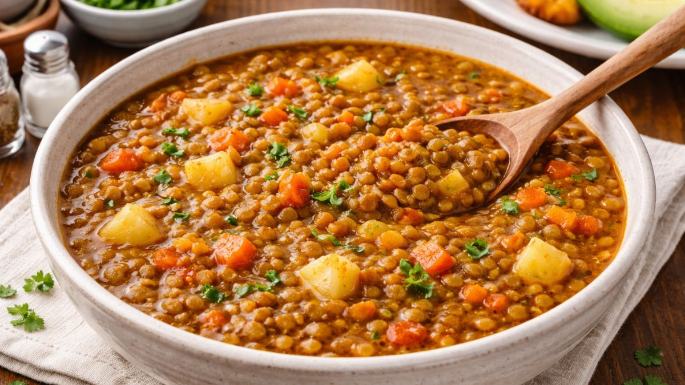

Colombian Lentils

Delicious and nutritious Colombian lentils
Ingredients
- 250 g (about 1 cup) brown or green lentils, rinsed
- 1 large potato, peeled and cubed
- 1/2 onion, finely chopped
- 1 ripe tomato, finely chopped
- 1 garlic clove, minced
- 1/2 teaspoon ground cumin
- Salt and vegetable oil to taste
- 4 cups of water
Instructions
- Heat a splash of oil directly in your cooking pot. Sauté the onion, tomato, and garlic for 3 minutes. Stir in the cumin and a pinch of salt.
- Add the rinsed lentils, cubed potatoes, and water to the pot. Stir everything well.
- Cover the pot with a lid and cook over medium heat for 30 to 35 minutes until the lentils are tender.
- Uncover the pot. Use your cooking spoon to mash a few potato cubes against the side of the pot. This naturally thickens the broth.
- Let it simmer uncovered for 2 more minutes, adjust the salt to your taste, and serve hot.
Enjoy!